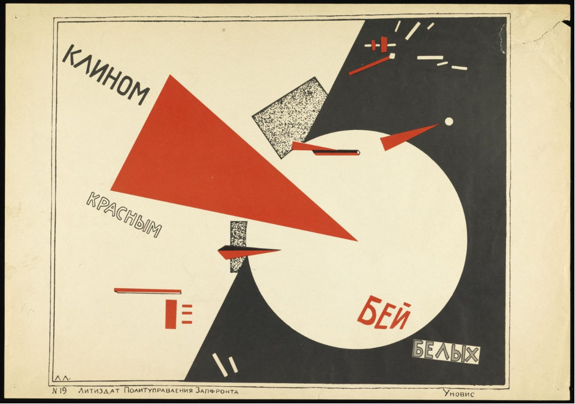
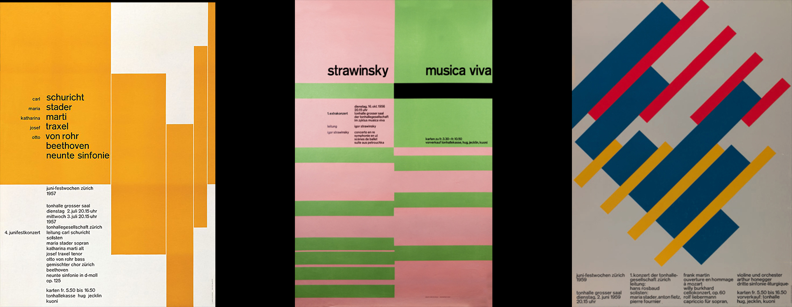
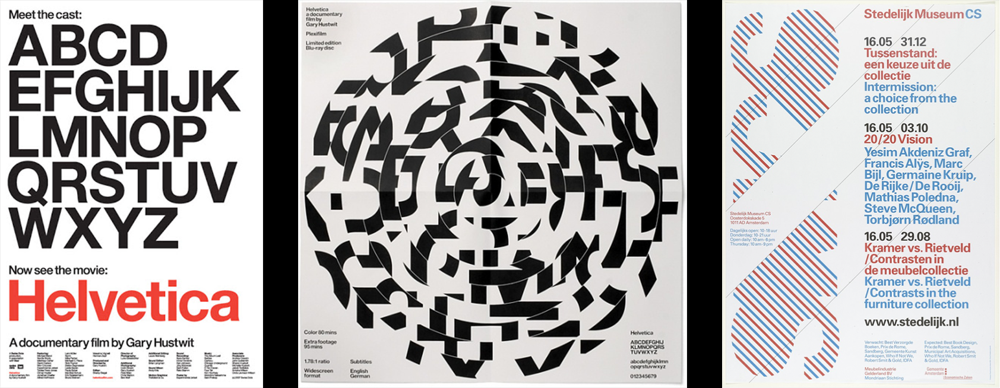
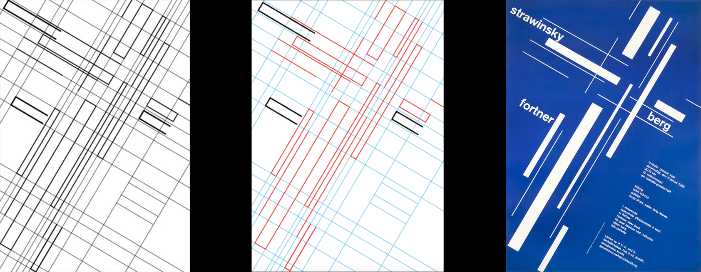

Josef Müller Brockmann is by far one of the most influential designers of the 20th century.
As a leading theorist and practitioner of the Swiss/ International style, he still influences much of design today. He believed in minimalism, objectivity, and legibility, and many designers including myself have taken inspiration from his work. Brockmann was one of the first designers we studied and ever since I’ve found myself returning to his designs when in need of inspiration. I intend on exploring how he got to this point of influencing so many designers, and why they are inspired.
Early life & influences
Walter Diggleman
Brockmann was born in Rapperswil, Switzerland in 1914 and studied Architecture and Art History at the University of Zurich. His designs were so successful that he established his own studio in Zurich specialising in graphics, exhibition design, and photography. He began as an apprentice for Walter Diggelman – a Swiss graphic artist and book designer best known for his winter sports posters. It's easy to see where Brockmann’s first inspirations came from when looking at Diggelman’s work: we can see in Diggelman’s posters a great emphasis on text. Very bold fonts were used, and this went on to inspire Brockmann’s typography and layout in the future.
Russian Constructivism
Another great influence on Brockmann's work was the Constructivist movement. Russian Constructivism was begun in 1913, and rejected the idea of traditional art in favour of using art for social purposes. Brockmann described Constructivism as “the conversion of design laws into practical solutions”. OneTwo, D. (2019).
Constructivism created an artform based on simplicity, lines, and geometry that was inspired by Cubism and Futurism. El Lissitzky was a well known constructivist artist. He created the poster - “Beat the Whites with the Red Wedge”, a propaganda poster that symbolised the Russian civil war; it encompasses a great deal of clean, minimalistic shapes illustrating a simplified version of war.

The principles of Constructivism were to reject any form of realism and make use of simple shapes such as circles, squares and triangles. This is instantly recognisable in Brockmann’s designs too. The colours used were usually limited: only blacks, reds, whites, blues and greens. While Brockmann did use more colours than this, he limited his colour palette to be no more than 3 or 4 colours per design in order to prevent distraction from the text.

This minimalism that Brockmann and the constructivists incorporated into their work has inspired me a lot. It taught me to stop feeling as though I must always add more to my designs, and instead I now focus on typography and the actual content of the work a lot more than illustrations and textures.
“Perfection is achieved, not when there is nothing left to add, but when there is nothing left to remove.”
-Antoine de Saint-Exupéry
Paul Renner
Renner was a graphic designer, type designer and typographer. He was born in 1887 and died in 1956, and so throughout Brockmann’s career he was influenced significantly by his work. Both designers were focused on using a typeface that was as legible as possible- they looked down on blackletter/ ornate, serif typefaces and Renner concluded that modern designers should use roman typefaces. (even better, sans serif geometric fonts like Futura, which he described in a late-1920s article as "the typeface of our age"). There is a clear influence of Russian Suprematism and Constructivism on Renner’s work too, a limited colour palette, simple, uniform shapes such as squares, triangles, and circles are used again and text is rotated in every single case.
The Swiss Style
The International style originated in Russia, Germany, and the Netherlands in the 1920s and was the basis for graphic design during the mid 20th century. It became known as the International style in the 1960s but because it was popularised by Swiss designers like Brockmann it was also known as the Swiss style; It emphasised legibility, simplicity, and objectivity. It emerged from the modernist and constructivist movements which both advocated for simplistic, minimal design with a purpose- Terror, D.- (2009). Brockmann was one of the most influential designers within this movement and created some of its most well remembered and widely recognised designs.
“form follows function” -Louis Henry Sullivan
This motto became a staple phrase of modernist architects after the 1930’s and consequentially, the Swiss style avoided extensive use of texture and illustration, instead using minimal, sans serif fonts that prioritised legibility over decoration.
Something that’s instantly recognisable as being influenced by Brockmann’s work is flat design in user interface: Brockmann’s designs cut out all texture and shading in many of his designs and in doing so he’s influenced many modern day UI designers, however this isn’t to say Brockmann’s designs were entirely flat. Flat design refers to the removal of ornamentation too – not just depth. The pure legibility of the style due to the use of sans serif typefaces also lead to flat design taking inspiration. They delivered an “understated message without the exaggerated claims typical of advertising” and got rid of the ornateness and unnecessary additions to the design. Bradley, S. (2013).
Another example of Brockmann’s designs being used as inspiration for modern day designers is the graphic design group named Experimental Jetset. They’ve created many designs that clearly draw from Brockmann’s and other Swiss designers past work. One example of this is the design they created for the cover of the “Helvetica” movie DVD. They use many of the same typographic techniques Brockmann was a fan of. The usage of Helvetica is probably the most recognisable similarity between the two designers, however the layout and usage of grids in their works also show Brockmann’s influence:

In 1953, Brockmann moved into the studio of the photographer Ernst A Heinger; as a result he began to employ more photography within his work. Brockmann around this time began to gain an interest in Moholy-Nagy’s theory (the theory that the photograph was free from any representational constraints), and started to see photography as the most “objective form of pictoral representation” - Lars Müller (2015). – page 31. In the 50s designers started to look into the potential of “subjective perception”, combining their personal interpretations of reality with phototechnical experimentation.
Brockmann contributed to the idea that Swiss design was objective and had no bias. He embraced the idea of impartial graphic design- leaving the viewer to come up with their own ideas about what it meant to them personally. The Moholy Nagy theory which Brockmann used freed designers from any representational constraints too- making their work more minimalist and therefore open to interpretation.
He stressed that photographs (combined with typography) were a great medium to work with. If he were using pictural visuals in his work he preferred photos rather than illustrations as they were perceived as a record of what the object actually looked like instead of something that could be manipulated or something that had the designers own personal expression in it. In his illustrations he avoided too much detail and instead used only very simple, basic shapes, inviting the audience to form their own opinion on the issue.
His Process
As I’ve discussed, Brockmann’s designs influenced the Swiss style in many ways – one of which was his invention of the grid system. In 1981 Brockmann published his book “Grid Systems in Graphic Design”; the goal of the book was to help future designers create unique and legible designs efficiently and quickly; for example - In Grid Systems he explains that “the fields are separated by an intermediate space so that pictures do not touch each other, and legibility is thus preserved”.
Something I find interesting about his grid designs is the impact they’ve had on our modern world. 90% of all media interactions are screen based and we all have a need for design which is easily absorbable and organised. Brockmanns rule was that “the fewer the differences in size of the illustrations, the quieter the impression created by the design.” As a result of this it leaves more room for the viewer to spend pondering the material rather than being overwhelmed by the design. A grid will create clarity and consistency to a websites UI, and this foundation for order will improve cognitive speed when a viewer is absorbing the information.
Using a grid makes a screen based UX designers job easier. Grids allow designers to manage measurements between elements, such as spacing and margins. This helps to create pixel-perfect designs from the very beginning and avoid time consuming corrections caused by incorrect adjustments.
“In my designs, subjectivity is suppressed in favour of a geometric grid that determines the arrangement of the type and images. The grid is an organisational system that makes it easier to read the message…” -Grid Ststems for Graphic Design
He created a structure for the space of the page, and aligned elements in the composition to this structure:

Conclusion
In conclusion, Josef Müller Brockmann has influenced both modern day graphic design and screen based UX design layouts. From his apprenticeship with Digglemann, the influences of Russian constructivism, and Paul Renner, we can see he was influenced from a young age to make use of bold sans serif fonts, minimalist geometry, and a limited colour palette. Brockmann influenced the flat design trend in user interface by rejecting realism using only simple shapes without texture. Another example of modern day graphic designers taking inspiration is the design group Experimental Jetset. Their layouts and typography wouldn’t be the same without Brockmann’s influence on their work. Lastly, I feel Brockmann contributed one of the most significant additions to design ever - the grid system. This allowed for web and graphic designers to arrange information in a very clear, concise, and easy to absorb way. Josef Müller Brockmann has clearly influenced many designers including myself in the modern day and will in my opinion continue to set the rules of graphic design parameters in the future.